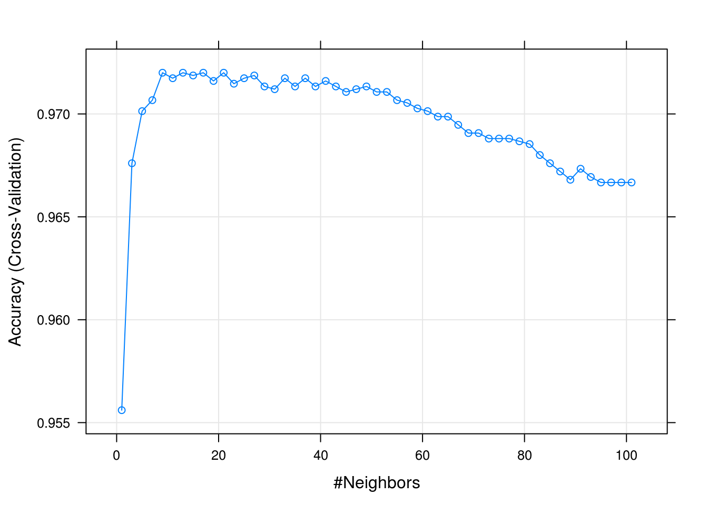

Chapter 21 The caret Package
Instructor’s Note: This chapter is currently missing the usual narrative text. Hopefully it will be added later.
Now that we have seen a number of classification (and regression) methods, and introduced cross-validation, we see the general outline of a predictive analysis:
- Select a method
- Test-train split the available data
- Decide on a set of candidate models via tuning parameters
- Select the best model (tuning parameters) using a cross-validated metric
- Use chosen model to make predictions
- Calculate relevant metrics on the test data
At face value it would seem like it should be easy to repeat this process for a number of different methods, however we have run into a number of difficulties attempting to do so with R.
- The
predict()function seems to have a different behavior for each new method we see. - Many methods have different cross-validation functions, or worse yet, no built-in process for cross-validation.
- Not all methods expect the same data format. Some methods do not use formula syntax.
- Different methods have different handling of categorical predictors.
Thankfully, the R community has essentially provided a silver bullet for these issues, the caret package. Returning to the above list, we will see that a number of these tasks are directly addressed in the caret package.
- Test-train split the available data
createDataPartition()will take the place of our manual data splitting. It will also do some extra work to ensure that the train and test samples are somewhat similar.
- Decide on a set of candidate models via tuning parameters
expand.grid()is not a function incaret, but we will get in the habit of using it to specify a grid of tuning parameters.
- Select the best model (tuning parameters) using a cross-validated metric
trainControl()will setup cross-validationtrain()is the workhorse ofcaret. It takes the following information then trains the requested model:form, a formula, such asy ~ .datamethod, from a long list of possibilitiespreProcesswhich allows for specification of things such as centering and scalingtuneGridwhich specifies the tuning parameters to train overtrControlwhich specifies the resampling scheme, that is, how cross-validation should be performed
- Use chosen model to make predictions
predict()used on objects of typetrainwill be magical!
To illustrate caret, we return to our familiar Default data.
data(Default, package = "ISLR")library(caret)We first test-train split the data using createDataPartition. Here we are using 75% of the data for training.
set.seed(430)
default_idx = createDataPartition(Default$default, p = 0.75, list = FALSE)
default_trn = Default[default_idx, ]
default_tst = Default[-default_idx, ]default_glm = train(
form = default ~ .,
data = default_trn,
method = "glm",
family = "binomial",
trControl = trainControl(method = "cv", number = 5)
)default_glm## Generalized Linear Model
##
## 7501 samples
## 3 predictor
## 2 classes: 'No', 'Yes'
##
## No pre-processing
## Resampling: Cross-Validated (5 fold)
## Summary of sample sizes: 6001, 6001, 6000, 6001, 6001
## Resampling results:
##
## Accuracy Kappa
## 0.9733372 0.4174282names(default_glm)## [1] "method" "modelInfo" "modelType" "results"
## [5] "pred" "bestTune" "call" "dots"
## [9] "metric" "control" "finalModel" "preProcess"
## [13] "trainingData" "resample" "resampledCM" "perfNames"
## [17] "maximize" "yLimits" "times" "levels"
## [21] "terms" "coefnames" "contrasts" "xlevels"default_glm$results## parameter Accuracy Kappa AccuracySD KappaSD
## 1 none 0.9733372 0.4174282 0.00358649 0.1180854default_glm$finalModel##
## Call: NULL
##
## Coefficients:
## (Intercept) studentYes balance income
## -1.066e+01 -6.254e-01 5.647e-03 1.395e-06
##
## Degrees of Freedom: 7500 Total (i.e. Null); 7497 Residual
## Null Deviance: 2192
## Residual Deviance: 1204 AIC: 1212accuracy = function(actual, predicted) {
mean(actual == predicted)
}# make predictions
head(predict(default_glm, newdata = default_trn))## [1] No No No No No No
## Levels: No Yes# train acc
accuracy(actual = default_trn$default,
predicted = predict(default_glm, newdata = default_trn))## [1] 0.9730703# test acc
accuracy(actual = default_tst$default,
predicted = predict(default_glm, newdata = default_tst))## [1] 0.9739896# get probs
head(predict(default_glm, newdata = default_trn, type = "prob"))## No Yes
## 1 0.9984674 0.001532637
## 3 0.9895850 0.010414985
## 5 0.9979141 0.002085863
## 6 0.9977233 0.002276746
## 8 0.9987645 0.001235527
## 9 0.9829081 0.017091877default_knn = train(
default ~ .,
data = default_trn,
method = "knn",
trControl = trainControl(method = "cv", number = 5)
)default_knn## k-Nearest Neighbors
##
## 7501 samples
## 3 predictor
## 2 classes: 'No', 'Yes'
##
## No pre-processing
## Resampling: Cross-Validated (5 fold)
## Summary of sample sizes: 6001, 6000, 6001, 6001, 6001
## Resampling results across tuning parameters:
##
## k Accuracy Kappa
## 5 0.9660044 0.14910366
## 7 0.9654711 0.08890944
## 9 0.9660044 0.03400684
##
## Accuracy was used to select the optimal model using the largest value.
## The final value used for the model was k = 9.default_knn = train(
default ~ .,
data = default_trn,
method = "knn",
trControl = trainControl(method = "cv", number = 5),
preProcess = c("center", "scale"),
tuneGrid = expand.grid(k = seq(1, 100, by = 1))
)default_knn## k-Nearest Neighbors
##
## 7501 samples
## 3 predictor
## 2 classes: 'No', 'Yes'
##
## Pre-processing: centered (3), scaled (3)
## Resampling: Cross-Validated (5 fold)
## Summary of sample sizes: 6001, 6000, 6001, 6001, 6001
## Resampling results across tuning parameters:
##
## k Accuracy Kappa
## 1 0.9556062 0.298089557
## 2 0.9534727 0.278858080
## 3 0.9676048 0.375302287
## 4 0.9684043 0.392531223
## 5 0.9701374 0.404022317
## 6 0.9710706 0.423064304
## 7 0.9706704 0.390664155
## 8 0.9712037 0.399173401
## 9 0.9720034 0.409106426
## 10 0.9712037 0.386139169
## 11 0.9717367 0.391087258
## 12 0.9718700 0.382391562
## 13 0.9720034 0.383930148
## 14 0.9718700 0.385920266
## 15 0.9718701 0.379873523
## 16 0.9713369 0.377628107
## 17 0.9720036 0.380320495
## 18 0.9716036 0.373394281
## 19 0.9716036 0.365929261
## 20 0.9718700 0.368421254
## 21 0.9720035 0.364668426
## 22 0.9716036 0.362097470
## 23 0.9714701 0.356376683
## 24 0.9714701 0.355664780
## 25 0.9717365 0.350899581
## 26 0.9714701 0.345911449
## 27 0.9718700 0.353134003
## 28 0.9714703 0.345081109
## 29 0.9713370 0.343455277
## 30 0.9712036 0.339093085
## 31 0.9712037 0.339182082
## 32 0.9714703 0.342168206
## 33 0.9717369 0.352226337
## 34 0.9713370 0.341045339
## 35 0.9713370 0.334327819
## 36 0.9714703 0.339159698
## 37 0.9717369 0.338120724
## 38 0.9718701 0.338963642
## 39 0.9713369 0.326523756
## 40 0.9716036 0.328850300
## 41 0.9716035 0.325286501
## 42 0.9714701 0.319449330
## 43 0.9713370 0.311058773
## 44 0.9713369 0.314958826
## 45 0.9710704 0.304969687
## 46 0.9712037 0.310515120
## 47 0.9712036 0.305970685
## 48 0.9714702 0.307416051
## 49 0.9713370 0.303143005
## 50 0.9712036 0.297926950
## 51 0.9710704 0.287872960
## 52 0.9709372 0.282257433
## 53 0.9710705 0.283589156
## 54 0.9709371 0.282226306
## 55 0.9706705 0.266533647
## 56 0.9708038 0.271977860
## 57 0.9706706 0.261835380
## 58 0.9701372 0.249188016
## 59 0.9702706 0.250148772
## 60 0.9702706 0.250114697
## 61 0.9701372 0.239629655
## 62 0.9702708 0.240658770
## 63 0.9698707 0.222966445
## 64 0.9701372 0.234377021
## 65 0.9698705 0.217685465
## 66 0.9698706 0.213155702
## 67 0.9694707 0.199923192
## 68 0.9692041 0.187559137
## 69 0.9690708 0.181218961
## 70 0.9692041 0.182387968
## 71 0.9690708 0.176074591
## 72 0.9690709 0.170120508
## 73 0.9688042 0.163573197
## 74 0.9684042 0.150065236
## 75 0.9688042 0.152290768
## 76 0.9686708 0.151535913
## 77 0.9688042 0.151657123
## 78 0.9684043 0.138012553
## 79 0.9686709 0.139859409
## 80 0.9685375 0.127092858
## 81 0.9685375 0.121296450
## 82 0.9677376 0.085964305
## 83 0.9680043 0.093510882
## 84 0.9677376 0.085481828
## 85 0.9676043 0.072888526
## 86 0.9676044 0.077956439
## 87 0.9672044 0.050919251
## 88 0.9672044 0.043952211
## 89 0.9668044 0.028789826
## 90 0.9670711 0.029972813
## 91 0.9673377 0.044609786
## 92 0.9669378 0.022381190
## 93 0.9669377 0.022513257
## 94 0.9668044 0.014921466
## 95 0.9666711 0.007329843
## 96 0.9666711 0.007329843
## 97 0.9666711 0.007329843
## 98 0.9666711 0.007329843
## 99 0.9666711 0.007329843
## 100 0.9666711 0.007329843
##
## Accuracy was used to select the optimal model using the largest value.
## The final value used for the model was k = 17.plot(default_knn)
ggplot(default_knn) + theme_bw()
default_knn$bestTune## k
## 17 17get_best_result = function(caret_fit) {
best_result = caret_fit$results[as.numeric(rownames(caret_fit$bestTune)), ]
rownames(best_result) = NULL
best_result
}get_best_result(default_knn)## k Accuracy Kappa AccuracySD KappaSD
## 1 17 0.9720036 0.3803205 0.002404977 0.05972573default_knn$finalModel## 17-nearest neighbor classification model
## Training set class distribution:
##
## No Yes
## 7251 250Notes to add later:
- Fewer ties with CV than simple test-train approach
- Default grid vs specified grid.
tuneLength - Create table summarizing results for
knn()andglm(). Test, train, and CV accuracy. Maybe also show SD for CV.
21.1 External Links
- The
caretPackage - Reference documentation for thecaretpackage inbookdownformat. caretModel List - List of available models incaret.
21.2 RMarkdown
The RMarkdown file for this chapter can be found here. The file was created using R version 3.4.1 and the following packages:
- Base Packages, Attached
## [1] "methods" "stats" "graphics" "grDevices" "utils" "datasets"
## [7] "base"- Additional Packages, Attached
## [1] "caret" "ggplot2" "lattice"- Additional Packages, Not Attached
## [1] "reshape2" "kernlab" "purrr" "splines"
## [5] "colorspace" "stats4" "htmltools" "yaml"
## [9] "survival" "prodlim" "rlang" "e1071"
## [13] "ModelMetrics" "withr" "glue" "bindrcpp"
## [17] "foreach" "plyr" "bindr" "dimRed"
## [21] "lava" "robustbase" "stringr" "timeDate"
## [25] "munsell" "gtable" "recipes" "codetools"
## [29] "evaluate" "labeling" "knitr" "class"
## [33] "DEoptimR" "Rcpp" "scales" "backports"
## [37] "ipred" "CVST" "digest" "stringi"
## [41] "bookdown" "dplyr" "RcppRoll" "ddalpha"
## [45] "grid" "rprojroot" "tools" "magrittr"
## [49] "lazyeval" "tibble" "DRR" "pkgconfig"
## [53] "MASS" "Matrix" "lubridate" "gower"
## [57] "assertthat" "rmarkdown" "iterators" "R6"
## [61] "rpart" "nnet" "nlme" "compiler"